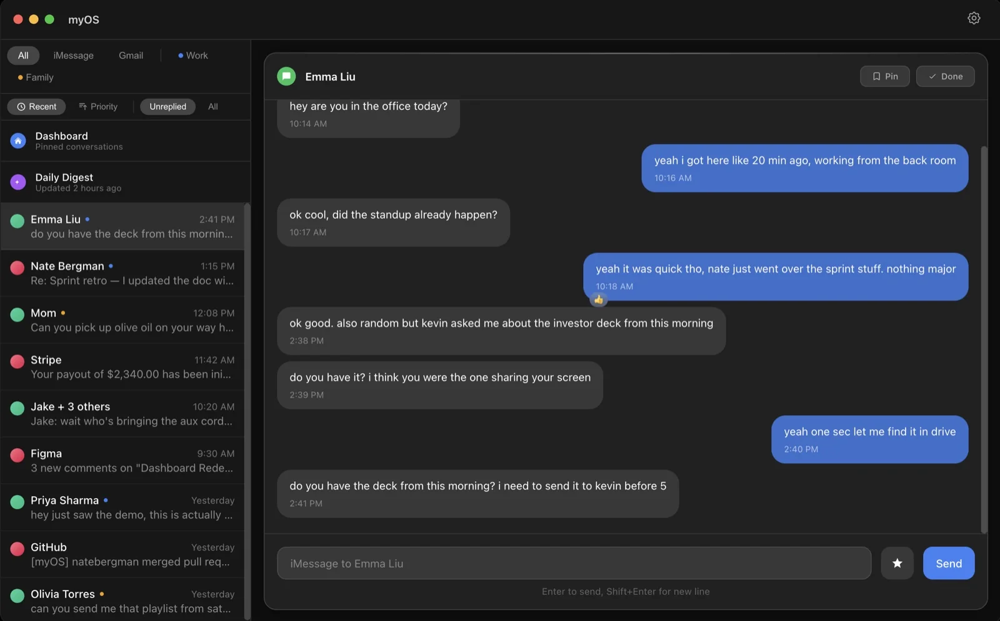
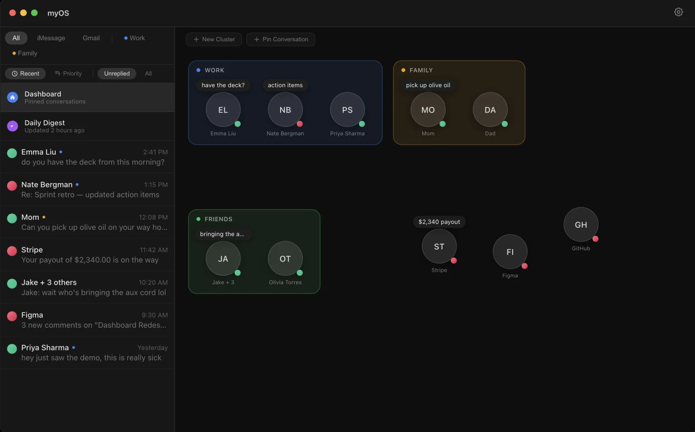
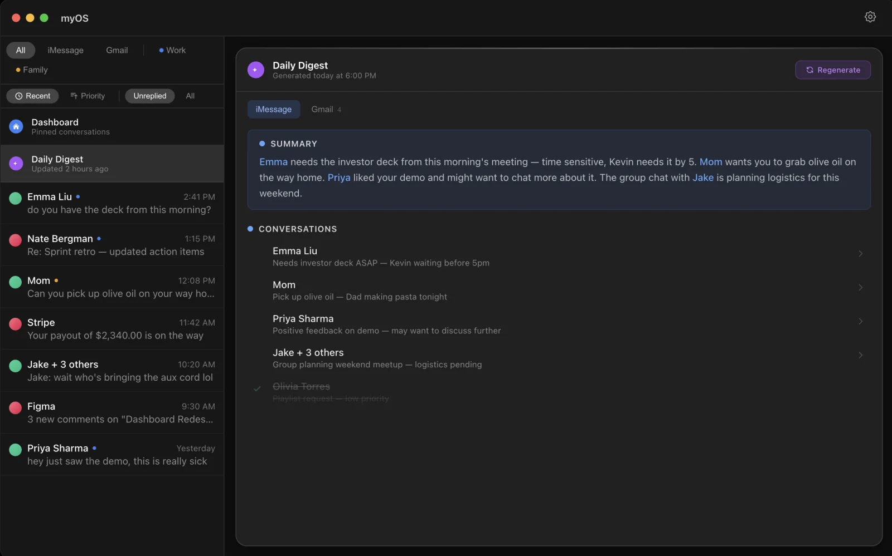

myOS
iMessage, Gmail, and what needs your attention. One inbox for Mac.

Less switching. More context.
Conversations live across apps, but the people and priorities overlap. myOS brings iMessage and Gmail into a single timeline, with search by name or message content and filters for the conversations that need a reply.

Keep people in view
The pinned dashboard turns important conversations into a canvas. Group them into clusters, keep related people together, and return to a conversation without searching through the inbox.

Catch up in a glance
AI-generated daily digests summarize conversations and surface follow-ups. The app supports Claude, OpenAI, and Gemini, so users can connect their preferred provider.
Built for Mac
Built with Electron, React, and TypeScript, with SQLite and Google API integrations. The app is packaged for Apple Silicon Macs; setup connects Gmail and an AI provider and requests the permissions needed for iMessage.
Explore the code ↗